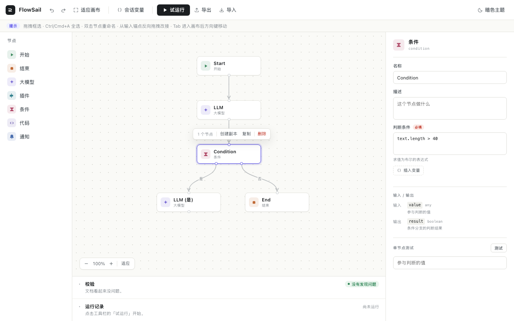
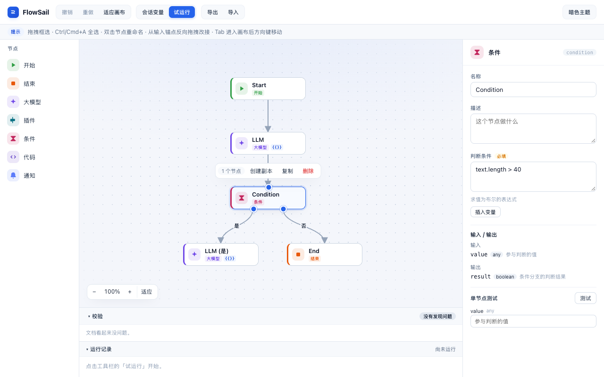
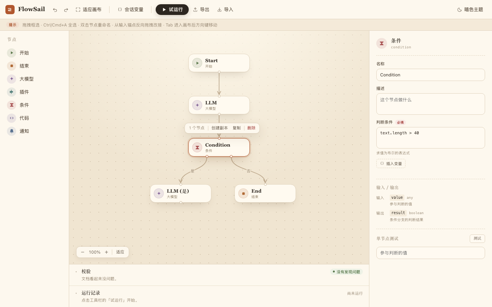
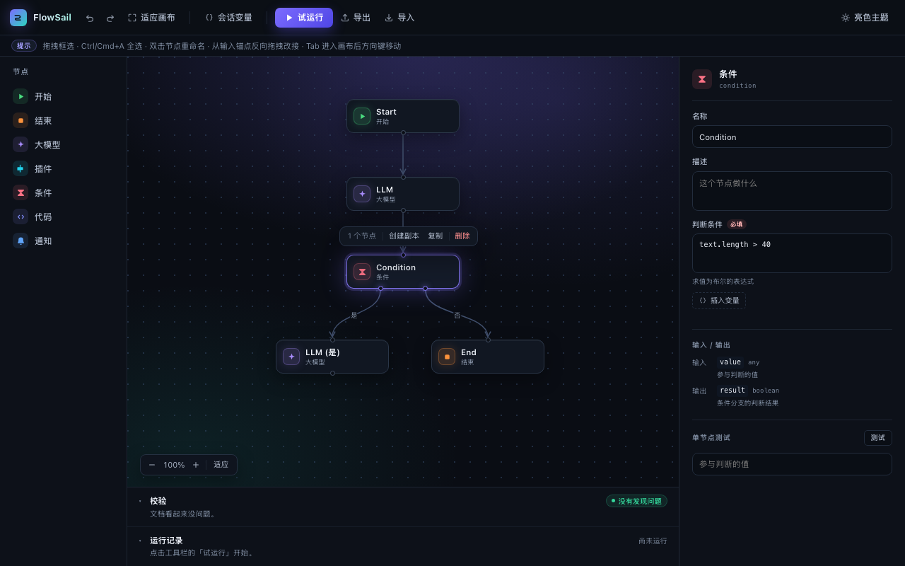
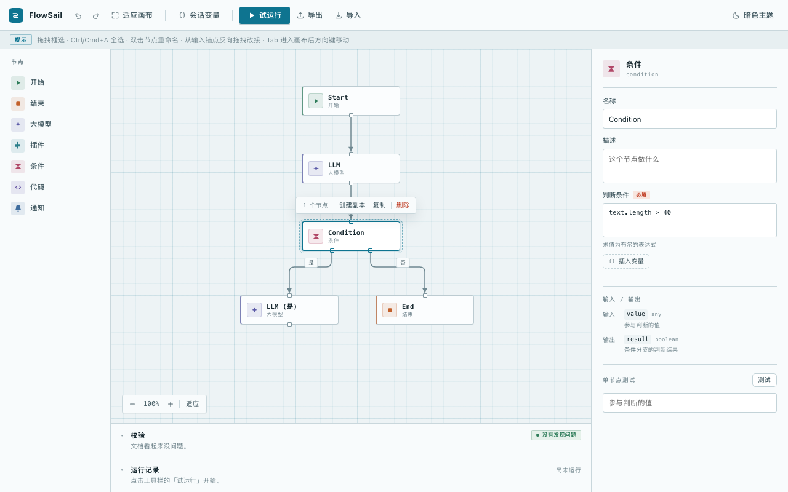

A Precision
精炼工作台 / 中性极简
在现状上做减法：中性灰白、细线分隔、单一靛蓝强调，节点去掉左侧色条，只留类型色图标。最接近当前气质，改动最克制。
中性灰细线靛蓝强调近黑主按钮
打开 HTML →
在同一套布局、节点几何（160 × 48）、文案与流程拓扑上，探索四种可落地的界面视觉语言。选定一版后再进入 UI 重构。

main @ 4dd5fbc，选中条件节点。四版均以此为比较基线。

在现状上做减法：中性灰白、细线分隔、单一靛蓝强调，节点去掉左侧色条，只留类型色图标。最接近当前气质，改动最克制。


近黑画布配品牌紫青渐变与光晕，节点图标发光、面板半透明。强化 AI 工作流工具的专业与沉浸感；需要与现有暗色主题一起落地。

冷青图纸网格、等宽字体标注、直角连线与方形锚点，选中态用虚线框标出。更像开发者工具，强调流程结构与可读性。